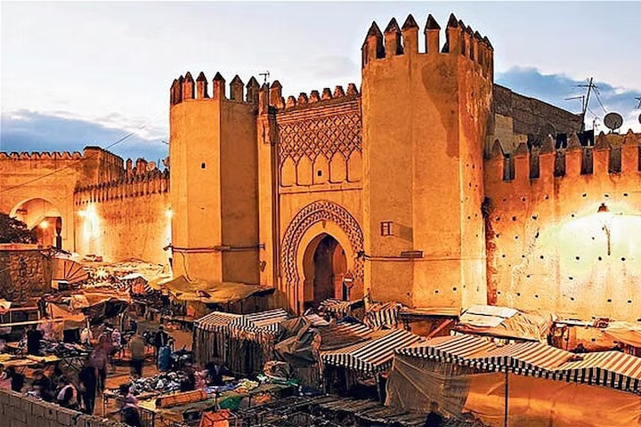
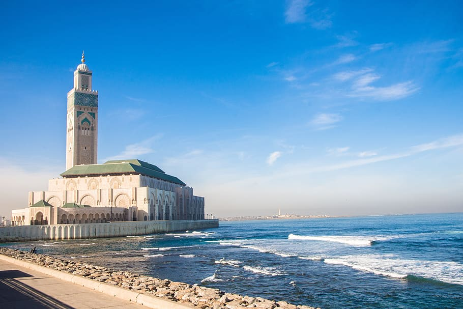
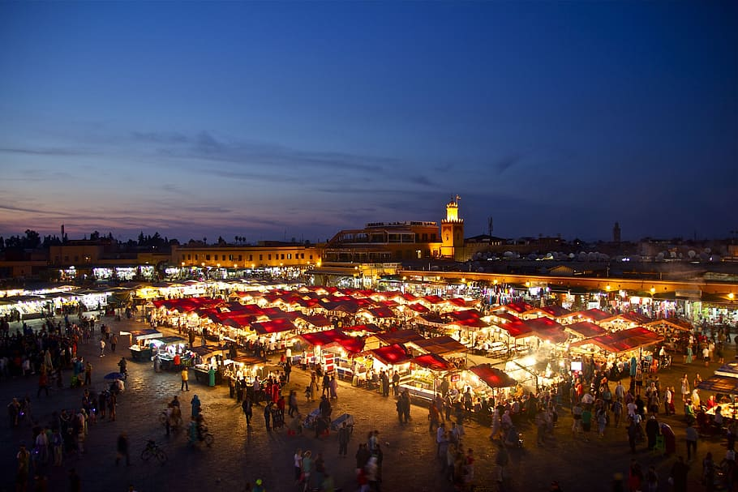
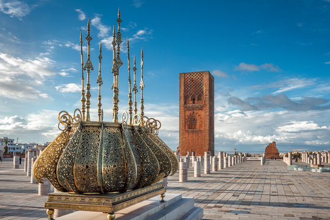

فاس هي إحدى أعرق المدن المغربية وأكثرها أصالةً، وتُعدّ عاصمةً ثقافيةً وروحيةً للمملكة المغربية. تأسست في القرن الثامن الميلادي على يد المولى إدريس الأول، لتصبح مع مرور الزمن مركزًا حضاريًا إسلاميًا بامتياز. المدينة العتيقة تزخر فاس بمدينتها العتيقة "فاس البالي"، المدرجة ضمن قائمة التراث العالمي لليونسكو، والتي تضم آلاف الأزقة الضيقة والأسواق التقليدية والمساجد التاريخية العريقة. جامعة القرويين تحتضن فاس جامعة القرويين، المؤسسة عام 859 ميلادي، والتي يُعدّها كثير من المؤرخين أقدم جامعة في العالم لا تزال تعمل حتى اليوم. الحرف والصناعات التقليدية تشتهر المدينة بصناعاتها التقليدية كالدباغة والنحاسيات والخزف والنسيج، وتبقى دبّاغة شواره من أشهر المعالم السياحية التي يقصدها الزوار من كل أنحاء العالم. الموقع والمناخ تقع فاس في شمال المغرب، وتتميز بمناخ معتدل في الربيع والخريف، وحار في الصيف وبارد في الشتاء. يبلغ عدد سكانها أكثر من مليون نسمة، مما يجعلها ثالث أكبر مدينة في المغرب

لدار البيضاء هي أكبر مدن المملكة المغربية وعاصمتها الاقتصادية، تقع على ساحل المحيط الأطلسي وتُعدّ المحرك الرئيسي للاقتصاد الوطني. تأسست المدينة الحديثة في مطلع القرن العشرين لتتحول إلى مدينة عصرية نابضة بالحياة. مسجد الحسن الثاني يُعدّ مسجد الحسن الثاني من أبرز معالم الدار البيضاء والمغرب كله، وهو من أكبر المساجد في العالم، يطل مباشرة على المحيط الأطلسي وتبلغ ارتفاع مئذنته 210 أمتار، مما يجعلها الأعلى في العالم. المركز الاقتصادي تستضيف الدار البيضاء أكبر ميناء في المغرب وأحد أكبر الموانئ في أفريقيا، كما تحتضن مقرات كبرى الشركات والبنوك الوطنية والدولية، مما يجعلها قلب الاقتصاد المغربي النابض. الحياة الثقافية والترفيهية تزخر المدينة بالمتاحف والمسارح ودور السينما والمطاعم الراقية، وتمتد على طول شاطئها كورنيش جميل يرتاده السكان والسياح على حد سواء. الموقع والسكان تقع الدار البيضاء في وسط غرب المغرب، ويبلغ عدد سكانها أكثر من أربعة ملايين نسمة، مما يجعلها أكبر مدينة في المغرب وواحدة من أكبر مدن القارة الأفريقية

مراكش هي اللؤلؤة الحمراء للمغرب، وإحدى أجمل المدن الإمبراطورية وأكثرها سحرًا وألوانًا. تقع في قلب المملكة المغربية عند سفح جبال الأطلس الكبير، وتجمع بين الأصالة العريقة والحيوية المتدفقة. جامع الفنا يُعدّ ساحة جامع الفنا أيقونة مراكش الشهيرة، المدرجة ضمن التراث الثقافي غير المادي لليونسكو. تعجّ الساحة بالحكواتيين والموسيقيين والباعة وراقصي الكوبرا، وتتحول مع غروب الشمس إلى مهرجان مفتوح لا مثيل له. المدينة الحمراء اشتُهرت مراكش بلونها الأحمر المميز المستمد من أبنيتها الطينية التقليدية، حيث تمتد أزقتها الضيقة في المدينة العتيقة محاطةً بالأسواق والرياضات والفنادق التراثية الفاخرة. الحدائق والقصور تحتضن المدينة حدائق المنارة وحدائق ماجوريل الشهيرة ذات اللون الأزرق الساحر، إلى جانب قصر البهيا وقصر الباديع اللذين يشهدان على عظمة الحضارة المغربية. الموقع والمناخ تقع مراكش في الجنوب الغربي للمغرب، وتتميز بمناخ شبه جاف حار صيفًا ومعتدل شتاءً. يبلغ عدد سكانها أكثر من مليون نسمة، وتُعدّ من أكثر الوجهات السياحية جذبًا في أفريقيا والعالم العربي.

الرباط هي العاصمة الرسمية للمملكة المغربية ومقر الحكومة والملكية، تقع على ضفاف المحيط الأطلسي عند مصب نهر أبي رقراق. تجمع بين الطابع العصري والموروث التاريخي العريق في توازن نادر وجميل. برج حسان يُعدّ برج حسان أبرز معالم الرباط وأكثرها شهرة، وهو مئذنة مسجد لم يكتمل بناؤه في القرن الثاني عشر الميلادي. يقف البرج شامخًا وسط أعمدة حجرية تُشكّل لوحة أثرية رائعة تستقطب آلاف الزوار كل عام. القصبة والمدينة العتيقة تحتضن الرباط قصبة الوداية الأثرية المطلة على المحيط الأطلسي ونهر أبي رقراق، وهي مدرجة ضمن قائمة التراث العالمي لليونسكو. كما تزخر مدينتها العتيقة بالأسواق التقليدية والمعمار الأندلسي الأصيل. مقر المؤسسات الرسمية تحتضن الرباط القصر الملكي ومقرات الوزارات والسفارات الأجنبية، مما يمنحها طابعًا دبلوماسيًا وسياسيًا مميزًا يختلف عن باقي المدن المغربية. الموقع والسكان تقع الرباط في شمال غرب المغرب، ويبلغ عدد سكانها قرابة مليوني نسمة. تتميز بمناخ معتدل طوال العام بفضل قربها من المحيط الأطلسي، مما يجعلها من أجمل العواصم الأفريقية وأكثرها هدوءًا وأناقةً.